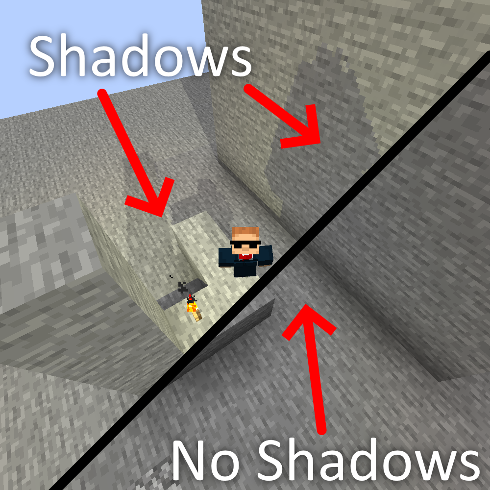

I make Minecraft mods for fun, since I have nothing else to do. I've made raytracing, reworked commands, and made every idea I could think of in a mod with no scope. Though I'm only a year into MC modding, I intend to continue for as long as I have ideas (and I have a lot in storage).

Vibrancy is a purely client side raytracing mod for Minecraft, on both Fabric and NeoForge from 1.21 to 1.21.11. It adds proper, raytraced shadows to block lights as well as sky lights (the sun and moon). Includes entity and block entity shadows, for both block and sky lights, as well as a large configuration system.
This site hosts some developer utilities (such as an MDK template generator for various setups), you can access them below: